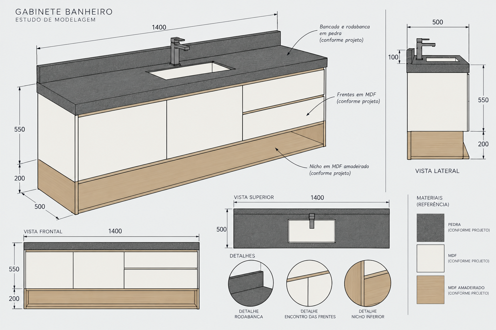
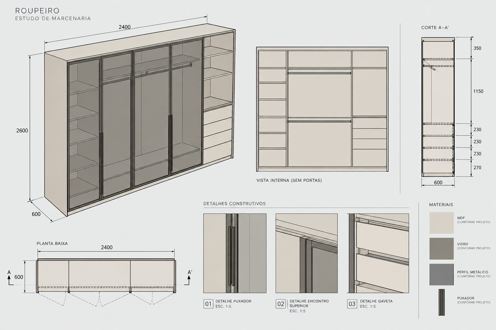
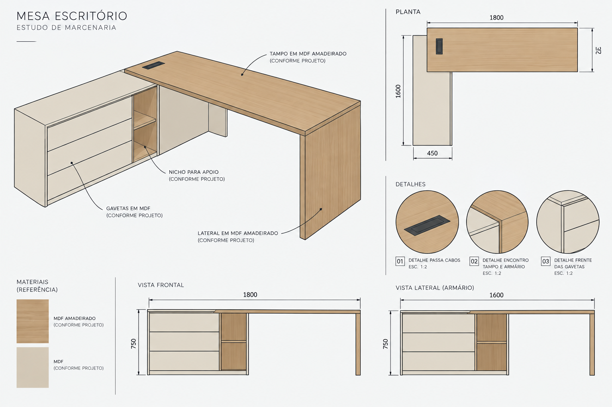
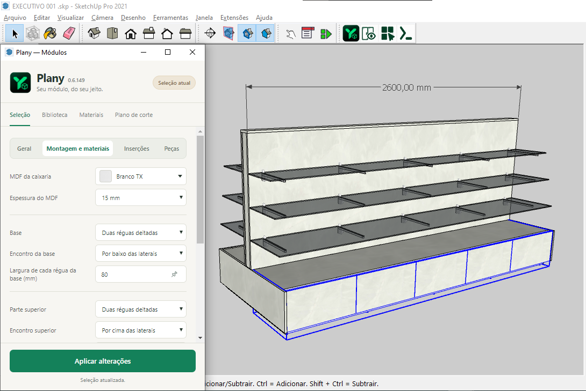
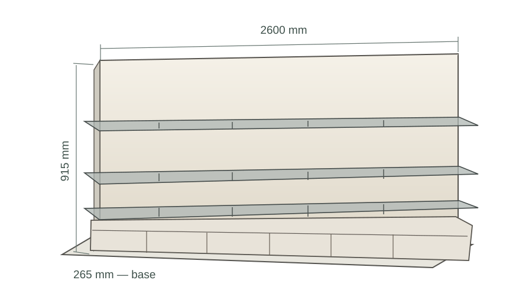

Para desenvolver projetos de móveis dentro do SketchUp.
Preços mensais de lançamento anunciados. Contratação ainda indisponível. Consultar valores ↗
MODELO → PEÇAS → CENTRAL



Do desenho no SketchUp à conferência das informações do móvel. Visualização conceitual.
PARA QUEMPara desenvolver projetos de móveis dentro do SketchUp.
PARA QUEDo modelo às informações que precisam ser conferidas antes da produção.
01 / UMA TAREFA NA PRÁTICA
Do modelo à conferência.
Explore três momentos do trabalho: o modelo no SketchUp, a identificação das peças e a conferência na Central.
Uma ideia. Informações organizadas.Sequência ilustrativa
O projeto começa no SketchUp.

Um móvel expositor como referência visual de modelagem no SketchUp. O Plany acrescenta ferramentas com lógica construtiva ao trabalho.
Geometria identificada como peças.

Outro projeto de referência. As medidas da tabela abaixo são fictícias e não foram extraídas deste desenho.
Dados fictícios · exemplo de organização
Peça
Medidas (mm)
Material
Qtd.
Lateral
720 × 560
MDF 18 mm
2
Base
764 × 560
MDF 18 mm
1
Prateleira
764 × 530
MDF 18 mm
1
Porta
716 × 397
MDF 18 mm
2
Identificação, dimensões e material ajudam a conferir o levantamento. A geometria precisa atender aos requisitos técnicos da operação.
Conferência na Central Plany.
PeçasChapasResultadoMateriais
LateralLateralBaseRetalho
Compare peças, chapas e uma alternativa de corte. Retalhos precisam ser físicos, elegíveis e compatíveis. Depois de mudar o modelo, atualize o levantamento.
A primeira etapa mostra uma captura real do Plany no SketchUp, fornecida para esta apresentação. Os demais desenhos, tabelas, medições de peças e a Central são ilustrativos, com dados fictícios. A distribuição de chapas não é um plano de corte calculado.
Informações de fabricação exigem conferência técnica. O exemplo não representa homologação de todos os tipos de geometria, materiais ou máquinas.
02 / O QUE TORNA DIFERENTE
Mais contexto para cada decisão.
01 / PROJETAR
Use retalhos de verdade no projeto e no corte.
Considere retalhos físicos compatíveis com o material e o plano. O reaproveitamento depende das dimensões, orientação e regras de corte; não significa baixa automática de um estoque global.
Um retalho elegível pode entrar entre as opções de chapa do plano.
02 / PROJETAR
Modele por comandos, direto no teclado.
O Modo Comandos oferece operações de modelagem com sugestões, destino e parâmetros. A confirmação e as medidas fazem parte do fluxo dentro do SketchUp.
Crie uma caixaria informando a operação e suas dimensões.
03 / PROJETAR
Transforme geometria em peças e peças em módulos.
Organize geometria elegível com identificação construtiva. A forma e as propriedades precisam atender aos requisitos da operação.
Reúna peças identificadas em um módulo do projeto.
04 / PROJETAR
Insira e dimensione módulos arrastando e clicando.
Posicione módulos diretamente no modelo e ajuste suas dimensões com as ferramentas de inserção.
Defina um ponto de inserção e dimensione a composição.
05 / PROJETAR
Central simples de verdade, sem permissões confusas.
Confira Peças, Chapas, Resultado e Materiais em uma Central dedicada. Depois de alterar o modelo, atualize o levantamento para trabalhar com as informações atuais.
Compare o levantamento com a alternativa de corte escolhida.
03 / PLANOS E DISPONIBILIDADE
Preços claros. Contratação em preparação.
Confira os valores mensais previstos para Plany para SketchUp. Os preços estão apresentados para consulta; ainda não há contratação ou cobrança neste site.
A condição Fundador terá critérios de elegibilidade, duração e disponibilidade comunicados antes da abertura das vendas.
Explore a demonstração e os recursos do Plany para SketchUp. O cadastro de interessados ainda está em preparação neste site.
Nenhum pagamento, assinatura ou licença é criado aqui.
Cadastro de interessados em preparação
O formulário será disponibilizado quando o serviço de contato estiver habilitado. Enquanto isso, você pode explorar os exemplos sem informar dados pessoais.